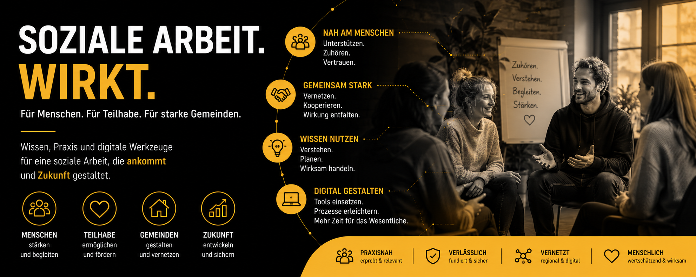

Soziale Arbeit digital gestalten!

Soziale Arbeit digital gestalten!
Kurze Einführung · von Thomas Bade
Transkript anzeigen
Willkommen auf der Seite „Soziale Arbeit digital gestalten“.
Diese Webseite führt zwei wissenschaftliche Perspektiven zusammen: die Analyse digitaler Fachsysteme in der Sozialen Arbeit sowie die Frage, wie algorithmische Entscheidungslogiken, Datenstrukturen und Governance Organisationen und soziale Verantwortung verändern.
Im Mittelpunkt steht die Frage, wie digitale Versorgungsplattformen, Datenmodelle und künstliche Intelligenz soziale Dienstleistungen, professionelle Entscheidungen und organisatorische Verantwortung verändern können.
Die erste Publikation untersucht, wie digitale Systeme soziale Arbeit strukturieren. Dabei wird deutlich:Software bildet Praxis nicht nur ab. Sie definiert zugleich, welche Informationen sichtbar werden, welche Abläufe standardisiert sind und welche Formen professioneller Einschätzung im Alltag noch möglich bleiben.
Die zweite wissenschaftliche Analyse richtet den Blick auf Governance, Transparenz und Verantwortung beim Einsatz datenbasierter Systeme. Besonders relevant ist dabei die Frage, wie Organisationen Risiken erkennen, dokumentieren und fachlich steuern können.
Die Executive Summary dieser Seite fasst deshalb die wichtigsten Erkenntnisse für Träger, Kommunen und soziale Organisationen kompakt zusammen.
Im Zentrum stehen vier Kernpunkte: Erstens: Digitalisierung ist eine Frage von Prozessen, Kultur und fachlicher Steuerung. Sie verändert fachliche Prozesse, Rollen und Entscheidungswege.
Zweitens: Datenqualität und Dokumentationslogiken beeinflussen direkt die Aussagekraft digitaler Systeme.
Drittens: Professionelle Verantwortung darf nicht vollständig an automatisierte Prozesse übertragen werden.
Und viertens: Organisationen benötigen klare Governance-Strukturen, bevor KI-Systeme produktiv eingesetzt werden.
Ergänzend dazu unterstützt eine Checkliste dabei, die eigene Organisation systematisch zu bewerten.
Die Checkliste hilft dabei, Digitalisierung nicht isoliert technisch zu betrachten, sondern als Bestandteil professioneller Organisationsentwicklung.
So entsteht aus einzelnen digitalen Werkzeugen eine strukturierte und verantwortbare Gesamtstrategie für die Soziale Arbeit.
Ihr Thomas Bade
Digitale Versorgungsplattformen bilden nicht nur Verwaltungsprozesse ab. Sie prägen, wie soziale Problemlagen erfasst, bewertet und weiterbearbeitet werden. Eingabemasken, Entscheidungslogiken, Kennzahlen und automatisierte Prozesse beeinflussen damit unmittelbar professionelle Handlungsspielräume, organisatorische Abläufe und die Beziehung zu Adressat*innen. Gerade deshalb braucht Digitalisierung in der Sozialen Arbeit fachliche Mitgestaltung, transparente Governance-Strukturen und eine kritische Bewertung der Auswirkungen auf Praxis, Organisation und Teilhabe.
Die Website greift zentrale Gedanken aus der Arbeit De-Scripting Social Work von Dr. Joshua Weber auf. Im Mittelpunkt steht die Frage, wie digitale Versorgungsplattformen, digitale Prozesse und zukünftige KI-Anwendungen soziale Praxis verändern – und welche Bedeutung dies für professionelle Verantwortung, Governance, Organisation und Adressat*innen hat.
Executive Summary
Vom Digitalisierungsprojekt zur fachlichen Steuerungsaufgabe
Einordnung für die Wissens- und Lernportale
Das Buch De-Scripting Social Work zeigt, dass digitale Versorgungsplattformen in der Sozialen Arbeit nicht neutral neben der Praxis stehen. In Entwicklungsprozessen werden Annahmen darüber technisiert, wie Fälle, Dokumentation, Bewilligung, Lebensbereiche, Auswertung und professionelle Rollen verstanden werden.
Für das Portal heißt das: Digitalisierung muss dort ansetzen, wo klassische fachliche Arbeit seit jeher stark war – bei sauberer Fallarbeit, Verantwortung, Reflexion, nachvollziehbarer Dokumentation und tragfähigen Verfahren.
Neu ist der operative Auftrag, diese Standards in digitale Systeme, Schulungen und Governance-Strukturen zu übersetzen.
Key Message
Die entscheidende Frage lautet nicht, welche Software eingeführt wird. Entscheidend ist, welche fachlichen Leitbilder, organisatorischen Steuerungslogiken und ethischen Vorstellungen durch digitale Systeme in den Arbeitsalltag eingeschrieben werden.
Denn Fachsoftware strukturiert nicht nur Dokumentation und Prozesse – sie beeinflusst, wie soziale Problemlagen wahrgenommen, bewertet, priorisiert und bearbeitet werden.
Big Points
Sechs Learnings für Träger, Kommunen, Pflege und soziale Organisationen
1. Fachsoftware ist Organisationslogik
Dokumentation, Leistungssteuerung, Fallarbeit und Controlling werden in einem System verbunden. Dadurch entstehen Wechselwirkungen zwischen Fachlichkeit, Verwaltung und Management.
2. Partizipation ist Pflichtprogramm
Fachkräfte dürfen nicht erst bei der Schulung ins Spiel kommen. Ihre Perspektive muss bei Problemdefinition, Prozessmodellierung, Testung und Weiterentwicklung systematisch eingebunden werden.
3. Mehrdeutigkeit bleibt
Soziale Wirklichkeit lässt sich nicht vollständig in Auswahlfelder übersetzen. Gute Systeme halten fachliche Reflexion offen und erzwingen nicht vorschnell scheinbare Eindeutigkeit.
4. Auswertung braucht Kontext
Datenpunkte sind noch kein Wissen. Auswertungen müssen fachlich interpretiert, begründet und auf ihre Nebenwirkungen für Fallarbeit und Adressat*innen geprüft werden.
5. Customizing ist Governance
Konfigurationen sind keine reine IT-Frage. Wer Felder, Workflows, Pflichtangaben und Rollen festlegt, gestaltet die Praxis der Organisation mit.
6. Kompetenz wird operativ
Digitale Kompetenz bedeutet, Software nicht nur bedienen zu können, sondern ihre fachlichen Annahmen, Grenzen und Steuerungseffekte zu verstehen.
Praxisrahmen
De-Scripting als Lern- und Governance-Modell
Was wird erfasst?
Welche Fallinformationen, Lebensbereiche, Leistungen, Kontakte und Entscheidungen werden als Datenpunkte angelegt?
Wie wird sortiert?
Welche Kategorien, Pflichtfelder, Auswahlwerte und Workflows strukturieren die fachliche Wahrnehmung?
Wer wertet aus?
Welche Berichte, Kennzahlen und Rollen greifen auf die Daten zu und welche Entscheidungen werden vorbereitet?
Was folgt daraus?
Welche Governance-Regeln sichern fachliche Verantwortung, Datenschutz, Beteiligung und Korrekturmöglichkeiten?
Premium Lernportal
Vertiefung für Organisationen der Sozialen Arbeit
Erweiterbare Lern- und Prüflogik
Diese Website-Fassung ist als frei nutzbarer Einstieg angelegt.
Für das Lernportal wird ein Premium-Modul mit vertiefenden Prüfkriterien wie Use-Cases, Datenschutz, Rollenmodell, Partizipation, Schulung, Dokumentationsqualität, Auswertungslogik und Monitoring vorliegen.
Positionierung: Die Seite verbindet klassische Qualitätsarbeit in sozialen Organisationen mit moderner digitaler Governance.
Damit wird Digitalisierung anschlussfähig an Leitung, Fachpraxis, Datenschutz, IT und Fortbildung.
Readiness Check · Soziale Arbeit digital gestalten
Thomas Bade
85072 Eichstätt
Email: tb@thomas-bade.de
Tel: 08421 675 19 77
Erstellt am:
Readiness Check
15 Prüfkriterien für Entscheidungsunterstützungssysteme in der Sozialen Arbeit
Anleitung: Bewerten Sie die Kriterien mit vorhanden, nicht vorhanden oder in Prüfung.
Bei „in Prüfung“ erscheint ein Notizfeld. Anschließend wird ein Management Summary erstellt.
Management Summary
Noch keine Bewertung berechnet.
Inhalte dieser Webseite und die Prüfkriterien für Entscheidungsunterstützungssysteme dürfen geteilt werden, sofern der Urheber genannt wird und keine Bearbeitungen verbreitet werden.
|
De-Scripting Social Work (Open Access)
Technografische Fallstudien über die (Weiter-)Entwicklung von Fachsoftwaresystemen für die Soziale Arbeit Von Dr. Joshua Weber, Nomos, 1. Auflage 2026, 355 Seiten Link zum Nomos Verlag |
Haben Sie Fragen zum Einsatz von KI in Ihrer Organisation?
Ich zeige Ihnen, wie das Lern- und Wissensportal beim KI Einsatz hilft. |
Aktuelle Forschung
KI-gestützte Teilhabeplanung – Wissenschaft trifft Praxis
Teilhabeplanung
KI-gestützte Teilhabeplanung für Menschen mit (drohender) Behinderung
Diana Schneider · Ethische, soziale und professionsspezifische Implikationen
Die Dissertationsschrift von Diana Schneider (BTU Cottbus-Senftenberg, 2025) ist die erste empirische Studie im deutschsprachigen Raum, die den potenziellen Einsatz KI-basierter Entscheidungsunterstützungssysteme (DSS) in der Eingliederungshilfe systematisch untersucht. Auf Basis qualitativer Expert:innen-Interviews mit Fachkräften aus Leistungsträgern und Leistungserbringern werden ethische, soziale und professionsspezifische Implikationen beleuchtet — lange bevor solche Systeme in der Praxis eingesetzt werden.
Die Studie verbindet Technikfolgenabschätzung (Vision Assessment) mit sozialarbeiterischer Professionsforschung. Sie zeigt: DSS können sinnvoll sein — aber nur, wenn Datenqualität, Verantwortungsstrukturen, Partizipation und Data Literacy der Fachkräfte mitgedacht werden. Das Fazit ist weder technikeuphörisch noch dystopisch, sondern klar pragmatisch.
Jede Karte öffnet eine thematische Zusammenfassung des jeweiligen Buchkapitels.
Die Executive Summaries der neun Kapitel wurden mithilfe Künstlicher Intelligenz erstellt und anschließend von Thomas Bade fachlich geprüft, redaktionell überarbeitet und freigegeben.
KI-basierte Entscheidungsunterstützungssysteme in der Sozialarbeit — Begriffe, BTHG-Reform und die Relevanz für die Eingliederungshilfe.
Vier zentrale Befürchtungen: fragmentierte Daten, medizinisches Paradigma, Automatisierung, vereinfachte Kausalität.
Vision Assessment + Expert:innen-Interviews. Collingridge-Dilemma: Technikfolgen früh abschätzen.
Sozialrechtliches Dreieck: Wer trägt Verantwortung, wenn ein Algorithmus mitentscheidet?
5-stufiger Prozess: Bedarfserhebung bis Evaluation. Entscheidungsunterstützungssystem-Potenzial und Standardisierungsrisiken.
Datenqualität in Einrichtungen: kritisches Zeugnis der Fachkräfte über eigene Dokumentation.
Antizipierte Entscheidungsunterstützungssystem-Funktionen: Workflow, Wissen, Dokumentation, Prognostik, Fallgruppen.
Vertrauen in Algorithmen, Data Literacy und die Frage: Wer ist noch Experte?
Weder Utopie noch Dystopie — 5 Handlungsempfehlungen für einen verantwortungsvollen Entscheidungsunterstützungssystem-Einsatz.